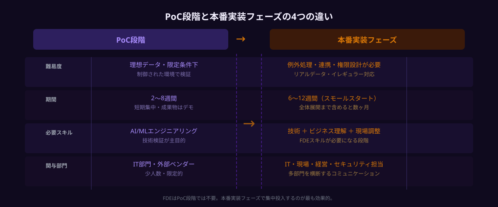
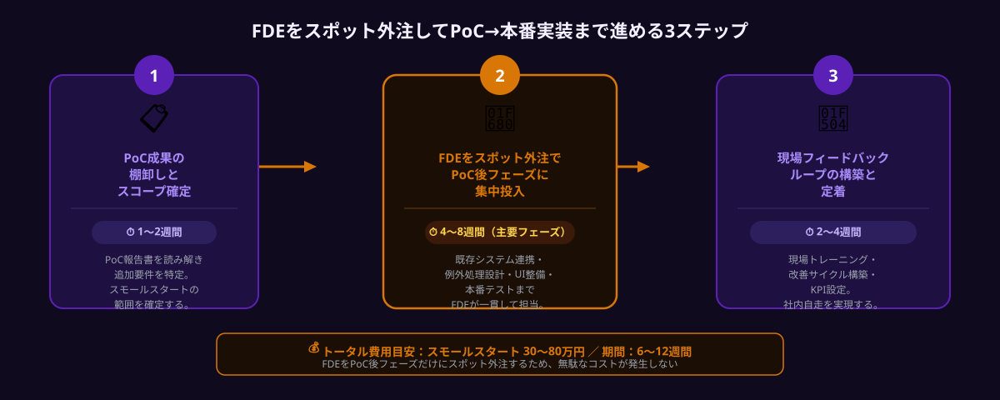

AI導入をPoC止まりで終わらせないための最短解は、FDE（フォワード・デプロイド・エンジニア）をスポット外注でPoC後フェーズだけに集中投入することです。PoC止まりになる企業の共通点はPoC後の「つなぎ役」不在にあります。FDEはビジネス課題とAI実装の両方を理解し、本番移行から現場定着まで一気に担えるため、費用30〜80万円・6〜12週間で本番稼働まで到達できるケースが増えています。
📅 本記事は2026年8月時点の情報に基づいています。FDE関連の市場動向・報酬相場は変動する場合があります。
AI導入がPoC止まりになる3つの構造的原因
国内企業のAI導入調査（2026年）によると、AIプロジェクトの約60%がPoC（概念実証）段階で止まり、本番稼働に至らないまま予算を消費しています。この問題はAIツールの性能とは無関係に発生します。原因はプロジェクト推進の構造的な欠陥にあります。
原因1：PoC後に「つなぎ役」がいなくなる
PoCは通常、プロジェクト専任チームが短期集中で進めます。しかし検証終了後、メンバーはそれぞれ元の業務へ戻り、本番移行を推進する人材がいなくなります。技術的な知識を持ちながら経営層に報告し、現場担当者に説明できる「両側の言語を話せる人」が社内に存在しないことが最大の原因です。
典型的な失敗パターン：PoC報告書が経営会議で承認され予算も通ったが、いざ本番化の担当者を決める段階で「誰がやるのか」が決まらず、6ヶ月後に立ち消えになる。
原因2：現場業務フローとのギャップが想定外に大きい
PoCは理想的な条件下で行われます。整備されたサンプルデータ、熱意のある担当者、例外処理なしのシンプルなフロー。しかし本番環境は違います。データの揺れ・イレギュラーな入力・既存システムとの連携・レガシーな業務手順が複雑に絡み合い、「PoCではうまくいったのに」という状況が続出します。この技術的ギャップを埋めるには、業務と技術の両方を理解した人材が必要です。
原因3：経営層・現場・IT部門の認識がずれたまま本番に進む
経営層は「PoC成功＝本番移行は簡単」と思い込みがちです。一方、IT部門は「セキュリティ要件・既存システム連携・ランニングコスト」を心配し、現場は「自分たちの仕事がなくなるのでは」と不安を抱えています。この三者の認識ギャップを埋めるコミュニケーション設計が欠如していると、本番化は動き出さないまま止まります。

FDEがPoC→本番の橋渡し役になれる3つの理由
FDE（Forward Deployed Engineer）は、AIエンジニアリングとビジネス実装の両方を担う専門職です。大手テック企業（PalantirやOpenAIなど）が実践してきた役割が、2026年には日本の中堅・中小企業でもスポット外注という形で活用されるようになっています。
📖 FDE（フォワード・デプロイド・エンジニア）とは
技術実装力とビジネス理解を兼ね備え、現場に「前進配備（Forward Deploy）」してAI導入の最後の1マイルを解決するエンジニア職。単なるシステム開発者でも経営コンサルタントでもなく、両者の橋渡し役として機能する。
①ビジネス課題とAI実装を両方理解している
通常の開発会社は「要件通りに作る」ことを得意とします。しかしPoC後の本番化で必要なのは「なぜこのAIツールを導入するのか」というビジネス目的から逆算して実装要件を再定義できる人材です。FDEはこの両側の思考ができるため、PoCで見えなかった課題を素早く再定義して実装に落とし込めます。
②PoC後という「特定フェーズ」だけにスポット投入できる
FDEを正社員として採用しようとすると年収800〜1,200万円以上が相場で、採用自体も困難です。しかしスポット外注であれば、必要なPoC後本番化フェーズ（6〜12週間）だけに集中投入できます。プロジェクトが完了すれば契約終了。次の案件で別のFDEを探すことも可能です。
③現場への浸透まで担当できる
多くのAIツール導入が失敗する理由は、「システムは動いているが誰も使っていない」状態になることです。FDEは現場担当者に対してトレーニングを行い、使いやすいUIへの改善提案、運用マニュアルの作成まで担います。これにより「ツールを作って終わり」ではなく「現場で実際に使われる」状態を実現できます。
3ステップで実現するPoC→本番実装
以下の3ステップは、PoCが終了した時点からスタートする想定です。社内にAIの知識がない段階でも、ANKENのFDE人材と組み合わせることで実行できます。
ステップ1：PoC成果の棚卸しと実装スコープの確定（1〜2週間）
最初の1〜2週間はFDEと共同でPoC報告書を読み解き、本番化に向けた課題を整理します。この段階でやることは3つです。
① PoC結果の客観的評価
「精度90%」というPoC結果が本番でも再現できるか、データ条件・例外パターン・処理速度の面から検証します。FDEが実際にPoC環境を触りながら評価するため、表面的な数字だけでなく本番リスクを洗い出せます。
② 本番追加要件の特定
既存システム（ERP・勤怠管理・CRMなど）との連携要件、セキュリティ・権限管理の要件、例外処理のルール定義を行います。
③ スモールスタートスコープの確定
最初は1部門・1業務フローに絞って本番化します。全社展開は段階2以降。スコープを絞ることでリスクを最小化できます。
ステップ2：FDEをスポット外注でPoC後フェーズに集中投入（4〜8週間）
スコープが確定したら、FDEをANKENなどでスポット外注して本番実装に入ります。この段階でFDEが担う主な作業は以下の通りです。
【本番実装フェーズでFDEが担う5つの作業】
① 既存システムとのAPI連携・データパイプライン構築
② 例外処理・エラーハンドリングの実装（PoCでは想定しなかったイレギュラーへの対応）
③ セキュリティ要件・アクセス権限の実装
④ 現場担当者向けのシンプルなUIまたは操作手順書の整備
⑤ 本番環境でのテスト・品質確認
週3〜5日の稼働で進めるケースが多く、ANKENでは事前に実績・スキルセットを確認したFDEエンジニアを紹介するため、スタートから2週間で本番実装の主要部分が完成するペースで進められます。

ステップ3：現場フィードバックループの構築と定着（2〜4週間）
本番システムが動き始めたら、「使われる状態」を作ることが最終ゴールです。ここで多くの企業が手を抜いてしまいます。
定着フェーズで実施すること：
・現場担当者へのハンズオントレーニング（30〜60分×2〜3回）
・フィードバック収集の仕組み作り（Googleフォームや社内チャットなど簡易なもので可）
・週次での改善サイクル（使いにくいUI・エラーが出やすいケースを都度修正）
・KPI設定と効果測定の開始（処理時間・エラー率・担当者の作業時間など）
FDEがこの段階まで関与することで、「システムは作ったが使われない」という最悪のパターンを防げます。定着フェーズが完了した時点でFDEとの契約を終了し、その後は社内で自走できる状態を目指します。
費用・期間の目安とANKENで依頼する流れ
FDEをスポット外注でPoC後フェーズに投入した場合の費用・期間の目安は以下の通りです。
【PoC後FDE投入の費用・期間目安】
▼ スモールスタート（1部門・1業務フロー）
費用：30〜80万円 ／ 期間：6〜12週間
稼働形態：週3〜5日のスポット稼働
▼ 中規模展開（複数部門・既存システム連携あり）
費用：80〜200万円 ／ 期間：3〜5ヶ月
稼働形態：週4〜5日の集中稼働
※ 費用はFDE1名のスポット外注報酬（設計・実装・定着支援含む）の目安。インフラ費用・ライセンス費用は別途。
ANKENでの依頼フローは以下の通りです。まず「無料相談」でPoC状況・本番化の課題を整理します（30分〜）。課題確認後、条件に合うFDEエンジニア候補を提案し、面談・スコープ合意・契約という流れで進みます。最短1〜2週間でFDEの稼働開始が可能です。
よくある質問
- Q. PoCは社内でできたが、本番実装だけFDEに依頼できますか？
- A. はい、可能です。FDEのスポット外注はPoC後の本番移行フェーズだけへの投入が最も多い形です。既存のPoC資料を共有するだけで開始でき、スモールスタートで4〜8週間のスコープが一般的です。
- Q. FDEはどのくらいの期間依頼すればいいですか？
- A. PoC〜本番移行フェーズで4〜12週間が目安です。週3〜5日稼働で、スコープ確定・実装・現場定着まで担当するケースが標準的です。プロジェクト完了後は必要に応じて延長も可能です。
- Q. FDEとシステム開発会社は何が違いますか？
- A. システム開発会社はシステム構築が主目的ですが、FDEはビジネス課題の解決が目的で、現場への浸透・業務プロセス改善まで一貫して担います。また、スポット外注なのでPoC後の特定フェーズだけに低コストで投入できます。
まとめ
AI導入がPoC止まりになる根本原因は、PoC後の「つなぎ役」不在・現場業務とのギャップ・部門間の認識ズレの3点です。この問題を解決する最短手段が、FDEをスポット外注でPoC後フェーズだけに集中投入するという方法です。
3ステップを整理します。まずPoC成果の棚卸しと実装スコープを確定し（1〜2週間）、次にFDEを本番実装フェーズに投入して既存システム連携・例外処理・UI整備を進め（4〜8週間）、最後に現場フィードバックループを構築して定着させます（2〜4週間）。費用の目安はスモールスタートで30〜80万円・6〜12週間です。
PoCを「実験室の成功体験」で終わらせず、現場で実際に使われるAIツールに変えるために、FDE活用という選択肢をぜひ検討してみてください。